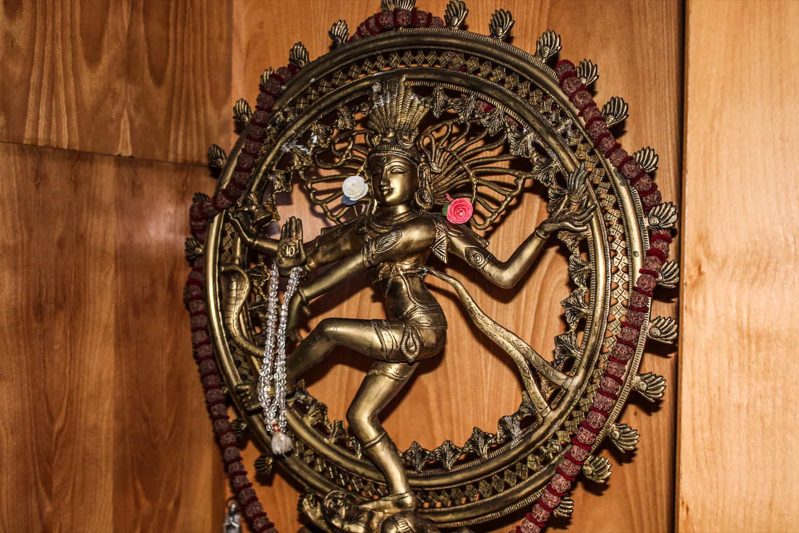
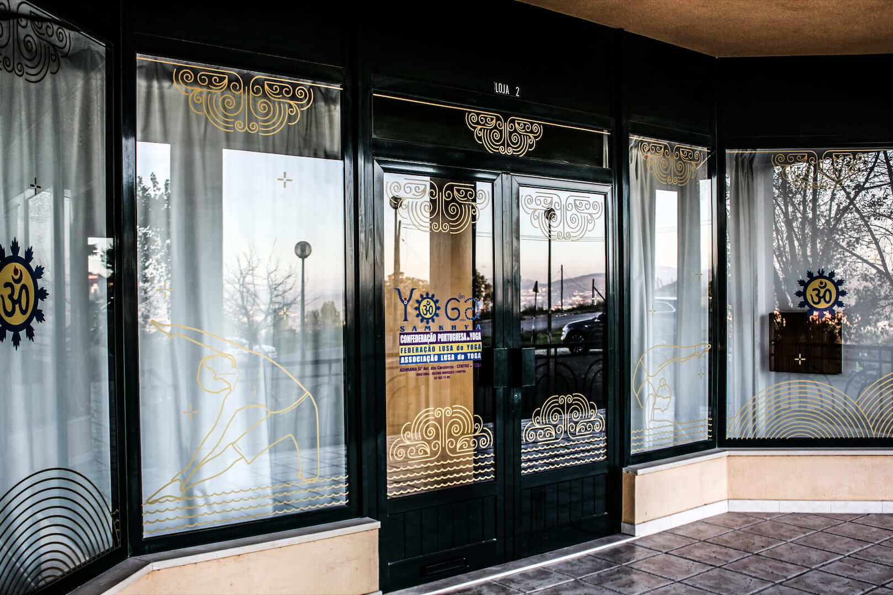
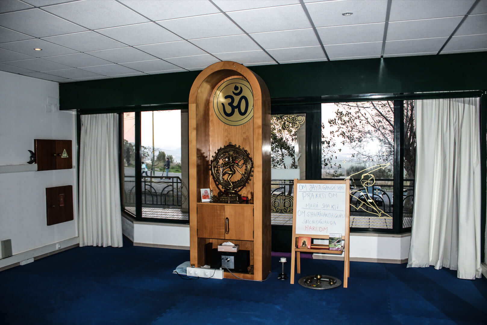
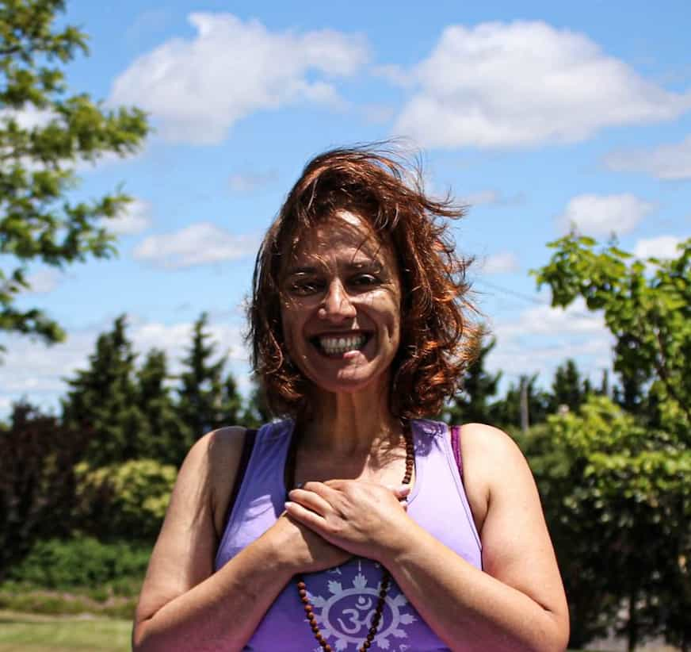
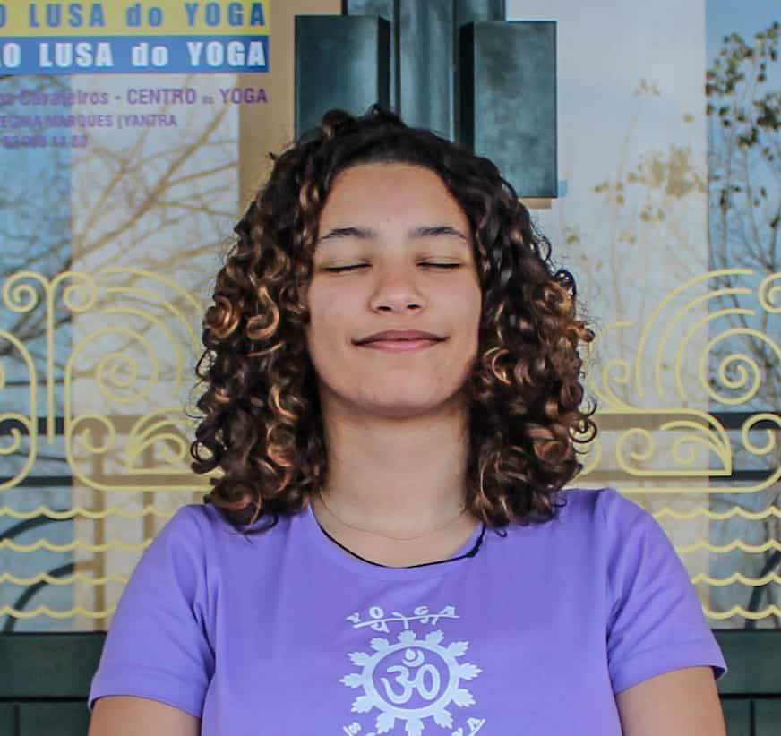

O Áshrama de Santo António dos Cavaleiros - Centro do yoga dedica-se exclusivamente à divulgação e ensino do Yoga Primordial - o Yoga Sámkhya - com mais de 6000 anos de existência, multifacetado e completo.
O Áshrama está presente anualmente na celebração do Dia Mundial do Yoga, promovido pela Confederação Portuguesa do Yoga.
Um dia dedicado ao desenvolvimento humano, promovendo a consciência do corpo, mente e emoções, bem como a saúde integral e longevidade.


Temos várias opções de aulas para todas as idades e níveis de experiência. Estamos preparados para adaptar as aulas às necessidades de cada aluno.

Regina Marques

Inês Xavier
Gonçalo Brás
"Um local com gente boa, genuína e que faz tudo com muita dedicação e amor. Descobrir este espaço e esta professora fez-me ver que o Ioga fará sempre parte da minha vida! Recomendo muito!!!"
Sílvia Sousa - Google Reviews"Um ambiente tranquilo com muita luminosidade e boa disposição, a Regina é uma professora fantástica e que nos estimula a evoluir de dia para dia e a professora Inês é maravilhosa com as crianças, as minhas filhas adoram na e a evolução nota se a olhos vistos. Recomendo a 100%."
Claudia Calixto - Google Reviews"Á muitos anos que pratico yoga com as professoras Regina Marques e Inês Xavier e só tenho a dizer que foi das melhores coisas que decidi praticar, um grande beijinho para elas."
Ricardo Carvalho - Google Reviews